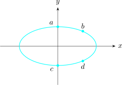

1.11 Implicit Functions and Jacobians
If \(F(x,y,z) =0\) is a given function of \(x,y,z\) then the equation \[F(x,y,z) =0\] is a relation that may describe one or more several functions \(z\) of \(x\) and \(y\) \[\text {e.g}\hspace {0.2cm} x^2 + y^2+ z^2 - 1 = 0\]
\[F(x,y,z) = 0\]
But \(z = \pm \sqrt {1 -x^2 -y^2}\) , both functions being defined on \(x^2 + y^2 \leq 1\).
Either function is said to be implicitly defined by \[x^2 + y^2 + z^2 - 1 =0\] as distinguished from a so - called explicit function of \(f\) where \(z = f(x,y)\), such that \(F(x,y,f(x,y))\).
Similarly, an equation \(F(x,y,z,w)=0\) may define one or more implicit functions of \(x,y,z\).
Consider the relation \[x^2 + 4y^2 - 4 =0\hspace {0.5cm}\cdots \cdots \cdots \hspace {0.5cm} (1)\] satisfied by the points on an ellipse shown below.

Clearly equation (1) is an implicit function, \(y(x)\) and \(\displaystyle {y = \pm \sqrt {1 - \bigg (\dfrac {x}{2}\bigg )^2}}\) with two solutions in the interval \(0< x<1\).
In some cases, we may not be able to solve for \(y(x)\).
e.g \(2xy + \sin y =0\) is a transcendental equation.
The General Chain Rule
Suppose that you have two sets of functions \begin {align*} y_1 & = f_1 (u_1,u_2,\cdots \cdots \cdots , u_p)\\ \vdots &\\ & \hspace {6cm} (1)\\ \vdots &\\ y_n & = f_n (u_1,u_2,\cdots \cdots \cdots , u_p) \end {align*}
and
\begin {align*} u_1 & = g_1 (x_1,x_2,\cdots \cdots \cdots , x_n)\\ \vdots &\\ & \hspace {6cm} (2)\\ \vdots &\\ u_p & = g_p (x_1,x_2,\cdots \cdots \cdots , x_n) \end {align*}
substituting (2) in (1)
\begin {align*} y_1 & = f_1\big ( g_1(x_1,x_2,\cdots \cdots \cdots , x_m) \cdots \cdots g_p (x_1,x_2,\cdots \cdots \cdots , x_m)\big )\\ \vdots & \\ \vdots & \\ y_n & = f_n \big (g_1(x_1,x_2,\cdots \cdots \cdots , x_m)\cdots \cdots g_p (x_1,x_2,\cdots \cdots \cdots , x_m)\big ) \end {align*}
one can obtain partial derivatives of these composite functions \[\frac {\partial y_i}{\partial x_j} = \frac {\partial y_i}{\partial u_1}\cdot \frac {\partial u_1}{\partial x_j} + \frac {\partial y_i}{\partial u_2}\cdot \frac {\partial u_2}{\partial x_j} + \cdots \cdots \cdots + \frac {\partial y_i}{\partial u_p}\cdot \frac {\partial u_p}{\partial x_j}\] \[\hspace {0.5cm} i = 1,2,\cdots \cdots , n\hspace {0.4cm} j = 1,2,\cdots \cdots , m\]
This can be expressed concisely in matrix language.
\[\frac {\partial y_i}{\partial x_j}= \begin {bmatrix} \dfrac {\partial y_1}{\partial x_1} & \dfrac {\partial y_1}{\partial x_2} & \cdots \cdots & \dfrac {\partial y_1}{\partial x_m}\\\\ \vdots & && \vdots \\\\ \dfrac {\partial y_n}{\partial x_1} & \dfrac {\partial y_n}{\partial x_2} & \cdots \cdots & \dfrac {\partial y_n}{\partial x_m} \end {bmatrix} \]
This is the Jacobian matrix of mapping (1).
The formula involve two other Jacobian matrices
\[ \frac {\partial y_i}{\partial u_j}= \begin {bmatrix} \dfrac {\partial y_1}{\partial u_1} & \cdots \cdots \cdots & \dfrac {\partial y_1}{\partial u_p}\\\\ \vdots &&\vdots \\\\ \dfrac {\partial y_n}{\partial u_1} & \cdots \cdots \cdots & \dfrac {\partial y_n}{\partial u_p}\\ \end {bmatrix} \]
\[\Bigg (\frac {\partial u_i}{\partial x_j}\Bigg ) = \begin {bmatrix} \dfrac {\partial u_1}{\partial x_1} & \cdots \cdots \cdots & \dfrac {\partial u_1}{\partial x_m}\\\\ \vdots &&\vdots \\\\ \dfrac {\partial u_p}{\partial x_1} & \cdots \cdots \cdots & \dfrac {\partial u_p}{\partial x_m}\\ \end {bmatrix} \]
The last two expressions (Jacobians Matrices) equal the previous one \[\frac {\partial y_i}{\partial x_j}= \Bigg (\frac {\partial y_i}{\partial u_j}\Bigg )\Bigg (\frac {\partial u_j}{\partial x_j}\Bigg )\] is called the general chain rule.
The mapping \(\hspace {0.2cm} x = \cos u \cos v,\hspace {0.5cm} y = \cos u \sin v,\hspace {0.5cm} z = \sin u\) is given.
Find the Jacobian matrix.
\[ \begin {bmatrix} \dfrac {\partial x}{\partial u} & \dfrac {\partial x}{\partial v}\\\\ \dfrac {\partial y}{\partial u} & \dfrac {\partial y}{\partial v}\\\\ \dfrac {\partial z}{\partial u} & \dfrac {\partial z}{\partial v}\\ \end {bmatrix} = \begin {bmatrix} -\sin u \cos v & - \cos u\sin v\\ -\sin u \sin v & \cos u \cos v\\ \cos u & 0\\ \end {bmatrix} \] \(\implies \) is the Jacobian matrix for the given mapping.
Assuming \(m=n\), the Jacobian matrix will be a square matrix and we can find its determinant \[ J = \det \Bigg (\frac {\partial y_i}{\partial x_j}\Bigg )= \begin {vmatrix} \dfrac {\partial y_1}{\partial x_1} & \dfrac {\partial y_1}{\partial x_2} & \cdots \cdots & \dfrac {\partial y_1}{\partial x_m}\\\\ \vdots & && \vdots \\\\ \dfrac {\partial y_n}{\partial x_1} & \dfrac {\partial y_n}{\partial x_2} & \cdots \cdots & \dfrac {\partial y_n}{\partial x_m} \end {vmatrix} \] called the Jacobian determinant.
Also \[J = \frac {\partial (y_1,\cdots \cdots \cdots ,y_n)}{\partial (x_1,\cdots \cdots \cdots ,x_m)} = \frac {\partial (f_1,\cdots \cdots \cdots ,f_n)}{\partial (x_1,\cdots \cdots \cdots ,x_n)}\]
Questions on this section
Stuck on something here? Ask below and it stays attached to this topic.